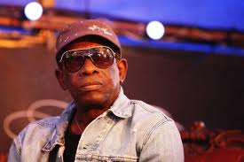

Music Stage
Small World Music & Za&Zoey Present: OLIVER MTUKUDZI - @The Opera House, 735 Queen St E., Toronto...
Friday November 11th Doors: 9:00 / Show: 10:00
$35 Advance at www.smallworldmusic.com / $40 at the Door Doors: 9:00 / Show: 10:00
He tells this reporter in an interview recently in Toronto before getting on stage at a concert that “I am still learning how to play music...music is a journey for me and it’s not over yet, it’s a spiritual journey and as long as God keeps me alive I will be performing and making albums”.
Before going solo more than two decades ago, the 70-year-old Allen was best known for his association with legendary Nigerian musician and band leader the inimitable Fela Kuti, who is often credited with creating afrobeat. Fela, as he’s popularly referred to, told this reporter himself before his death in 1997 that there “will be no afrobeat without Tony Allen”.
It was Allen that gave Fela’s drum section the funk and world-wide appeal his music engendered in the minds of aficionados. Allen has been described by many experts as equal to four people or even 10 drummers on stage. He has also been praised in many quarters as the most influential musician, along with Fela, of the last 60 years.
But his humility dwarfs that perception of him as master of his craft who was sought by the likes of James Brown. Allen kept saying in our interview that he’s “still learning” and notes that “I listen to every kind of music...other people’s music that may not mean anything to popular culture, music you might say will have no influence to what I am doing as an afrobeat drummer...because I keep my ears wide open for any and everything. So in that sense I am still learning; in life you never finish learning and everybody is important”, he said. Generally, he said, he’s enjoying his current form as a solo artist roving the world from his Paris, France base with a group of younger musicians. Essentially, he adds, I am spreading among others the spirit of afrobeat around the world and letting people know that our music is here to stay long after Fela has gone to join his ancestors. “I played music with the best of the best, and that’s Fela. Fela was an absolute genius,” Allen said.
Since his departure from Fela’s band in the late 70s he has had several albums under his belt himself, including No accommodation for Lagos and and a more recent one Secret Agent. Allen says his musicianship does not necessarily involve the Fela-type message-driven afrobeat which the legend was known for, stressing “I am just having fun and making people happy by talking to them in a different way through my music.
“Fela was different and I am not Fela...all I can say to you is that he was a genius and I am glad I was able to perform with him,” he said. Allen, who spent decades as Fela’s master-drummer, said he left the Africa 70 (Fela’s band) organization because “it was just time for me to do something else in life. I had no problems with Fela, he remained my brother until the day he died. He was a great man, and he always visited me in Paris when ever he was doing a European tour”.